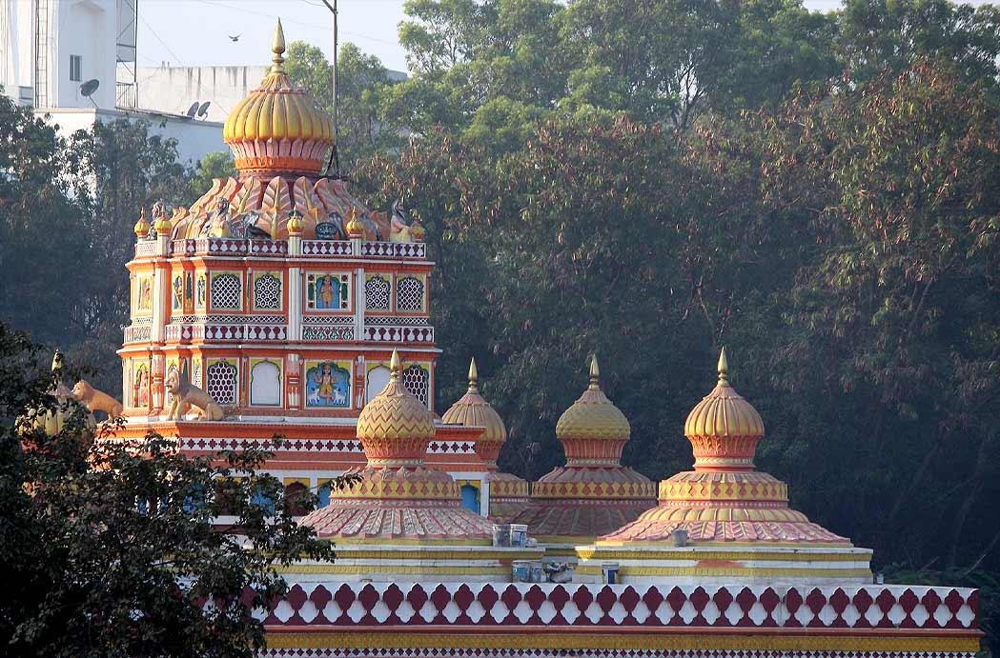
Shri Omkareshwar Temple
The Omkareshwar temple is one of the largest temples to visit in Pune and is dedicated to Lord Shiva. The temple is also among the most ancient Pune temples, constructed under the Peshwa dynasty.
The temple’s architecture, complete with beautiful domes and sculptures, is one of the first things that will strike you and leave you wondering. In addition to the statue of Lord Shiva in the main temple, lesser temples also have statues of Lord Ganesha, Goddess Durga, Lord Shani, Lord Vishnu, and Lord Hanuman. While in the city, make it a point to see this one of the most famous temples in Pune.
Location: Chandrashekhar Govind Aapte Rd, Shaniwar Peth, Pune
Timings: 5:30 AM – 11 PM
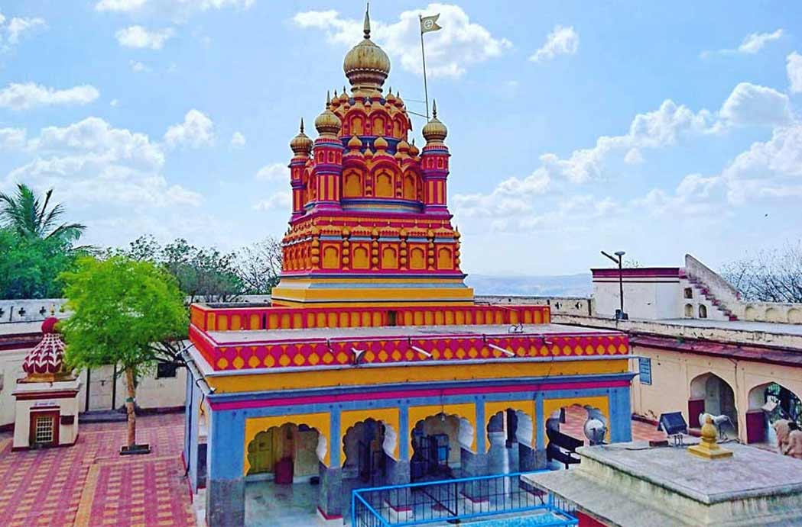
Parvati Hill Temple
As implied by its name, the temple is situated on a hill 2100 feet above sea level. To visit this stunning temple in Pune, you must ascend 103 stairs. When you finally reach the temple, its idols, and, of course, the picturesque view of the surrounding region, all the weariness from the lengthy ascent will go. It is one of the most scenic temples near Pune, within 100 km.
It is reported that Nana Saheb’s mother used to pray at a smaller temple (or shrine) that once stood in the exact location of the current temple. She was afflicted with an illness and swore to construct a more incredible temple once she recovered. The third Peshwa, Nana Saheb, then built the temple. This is one of the most famous temples in Pune.
Location: Parvati Paytha, Pune
Timings: 8 AM – 5 PM
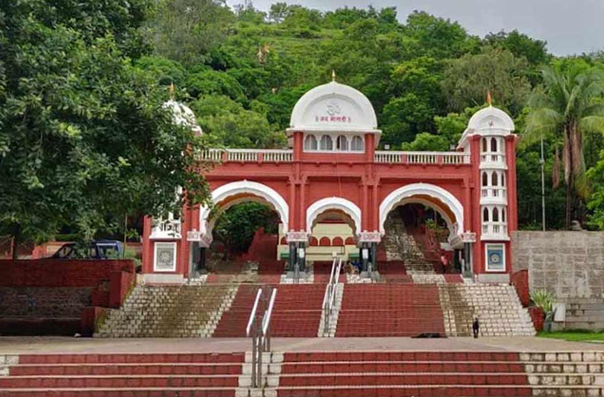
Shri Chatushringi Temple
Chatushrungi Mata Temple is one of the most famous temples in Pune, Maharashtra, and is dedicated to Chatushrungi Mata. This temple was constructed by a trader named Durkabhdas and is around 259 km from Pune.
This 90-foot-tall temple, built during the reign of Chhatrapati Shivaji, forces you to ascend 100 stairs. You will also discover a handful of Lord Ganesha-dedicated temples. This is the place to be if you’re looking for a pure environment to attain spirituality.
Location: Senapati Bapat Road, Close to Pune University Road, Gokhalenagar, Pune, Maharashtra 411016
Timings: 6 AM – 8:30 PM
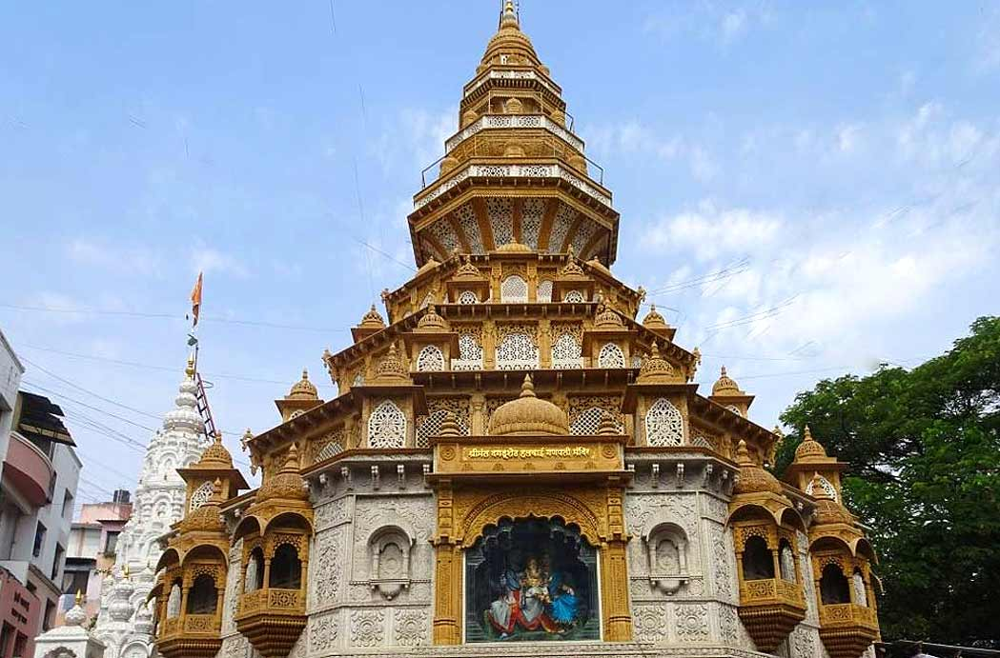
Shrimath Daduseth Halwai Ganpati Mandir
Dagadusheth Gadve, a confectioner, constructed the Dagadusheth Halwai Ganapati temple. His teacher advised him to build the temple following the death of his son from a fatal illness. According to a survey, this temple is one of the most frequently visited famous temples in Pune.
This is the only Pune temple where you can view the statue of Lord Ganesha from outside the temple. Not only is the idol visible from the outside, but also the inner sanctum, making this one of the most remarkable temples to visit in Pune for celebrating all the festivals with pomp and without constraints.
Lord Ganesha’s 7.5-foot-tall statue is decked with gold and precious stones presented by worshippers worldwide.
Location: Ganpati Bhavan, Budhvar Peth, Pune
Timings: 6 AM – 10:30 PM

Shri Ram Mandir Tulsibaug
NaroAppajiKhire, the Subhedar of Pune, constructed the Tulshibaug Ram temple during the Peshwa period. Shri Ramji Saunsthan oversees the administration of this temple.
The sanctuary of this temple has sculptures of Lord Ram, Sita, Laxmana, and Hanuman. Later, we brought Ganapati and Parvati sculptures to the shrine.
Just in front of the Ram temple is a little Hanuman shrine. Lord Hanuman is sculpted in black stone and is bowed before Lord Rama. This temple is one of the must-visit temples near Pune, within 100 km.
Location: Tulshibaug, Budhwar Peth, Pune, Maharashtra 411002.
Timings: 10 AM to 1 PM; 4 PM to 9 PM
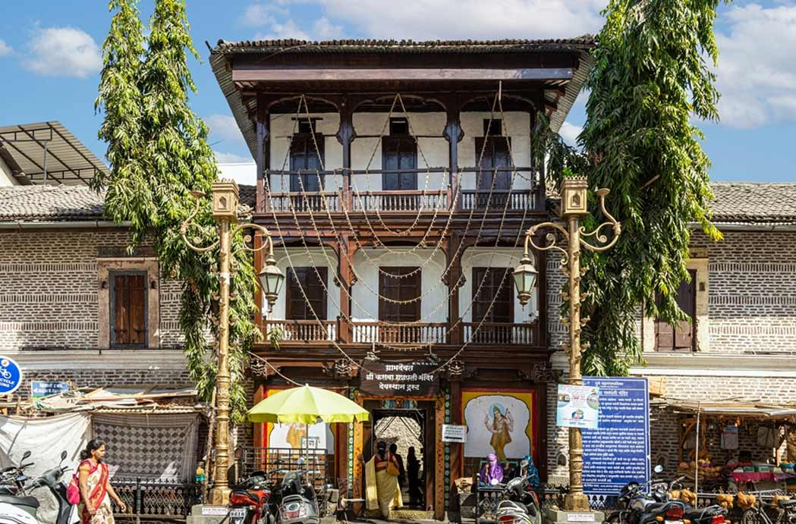
Shri Kasba Ganpati Temple
This is one of the best temples in Pune and has a rich history. The temple was constructed by Chhatrapati Shivaji’s mother, Queen Jijabai, and was devoted to the city’s defender, Kasba Ganpati. The instructor of Shivaji created the idol located within the temple.
During the independence fight, Lokmanya Tilak began holding festivals at the shrine, which led to its increased popularity. Since then, the temple has also grown significant for Lord Ganesha-related celebrations. On Ganesh Chaturthi, you should visit one of the famous temples in Pune to witness the temple in all its splendour.
Location: Kasba Peth Rd, Phadke Haud, Kasba Peth, Pune
Timings: 6 AM – 9 PM
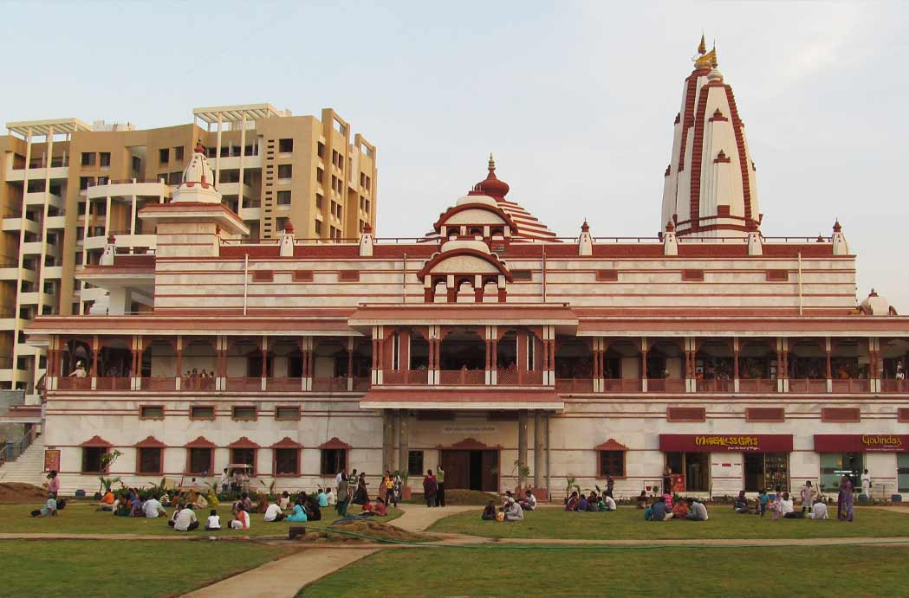
ISKCON NVCC Pune
ISKCON NVCC (New Vedic Cultural Centre) is situated in the less populated district of Kondhwa near Pune, making it one of the most well-known temples near Pune within 100 km.
The ISKCON NVCC is a temple dedicated to Krishna and Radha. The temple is surrounded by lush, verdant hills and offers its guests a fantastic atmosphere. Upon entering the prayer hall, you will be awestruck by the magnificent statues of Lord Krishna and Goddess Radha.
The idols are adorned with exquisite attire and garlands of various hues. The ceilings of the temple’s dome and its walls are beautifully embellished with vibrant artwork. In addition to being the residence of Radha, Krishna, and Balaram, the temple also hosts events like youth training programmes, Bhagvat Gita reading sessions, women and family empowerment initiatives, etc.
The ‘International Society for Krishna Consciousness,’ often called the ‘Hare Krishna movement,’ was founded in New York in July of 1966 by A.C. Bhaktivedanta Swami Prabhupada. ISKCON conforms to the teachings of the Vedic texts and the Vedas, including the Bhagavad-gita and Srimad-Bhagavatam. These sacred texts instruct “Vaishnavism,” or worship of Lord Krishna.
Location: Iskcon Nvcc Road Katraj-Kondwa Bypass, Tilekar Nagar, KondhwaBudruk, Pune, Maharashtra, 411048
Timings: 4.30 AM to 8.45 PM
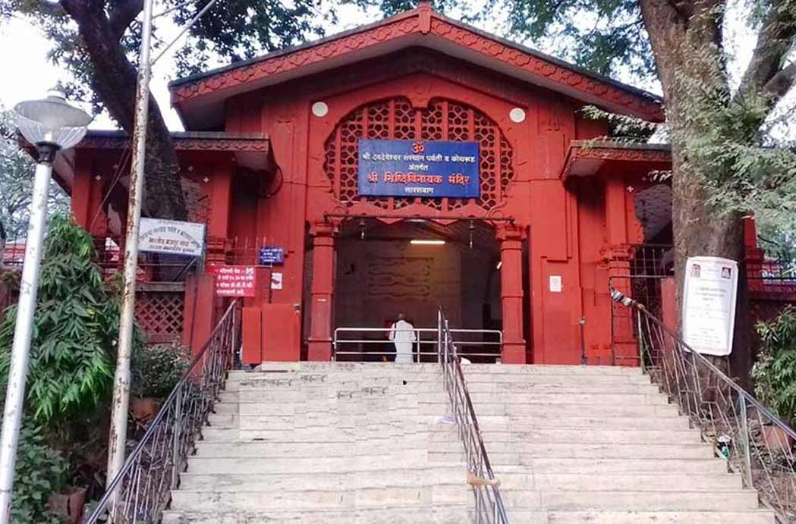
Shri Siddhivinayak Ganesh Temple, Sarasbaug
In 1784, the Maratha monarch Shrimant Sawai Madhavrao Peshwa erected the Sarasbaug Ganapati Temple, which is a temple for Siddhi Vinakayak Ganesh. Nanasab Peshwa, Madhavrao’s predecessor as Peshwa, named the island where the temple is located, Sarasbaug.
Situated at the foot of the Parvati Hills, the lake around the temple is rumoured to have been the site of secret Peshwas boating meetings. It is one of the most stunning temples near Pune, within 100 km.
Location: Sarasbaug, Pune
Timings: 6 AM to 8.30 PM
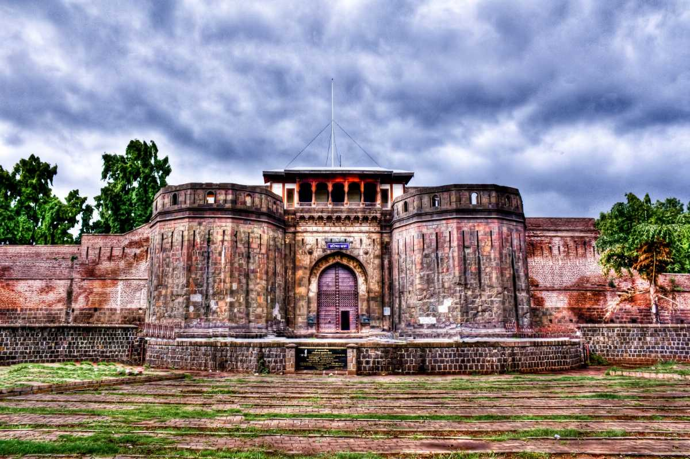
Shaniwar Wada
We cannot really discuss the historical places in Pune without discussing the Shaniwar Wada. However, it is one such structure that shows the opulence and pride of the Marathas even today. It is undoubtedly one of the most popular places in Pune that the tourists love visiting. Everything about this ancient structure reflects the stories of the days gone long back.
From the challenges faced by the Peshwas to the kind of lifestyle they used to have, you can understand a lot of things here. You must check out the towering height of the structures as well as the walls and you would know how much thought the Peshwas had put in to create a structure like this. Additionally they have made sure that they are maintaining all sorts of
security concerns in protecting this lavish structure.
Address: Shaniwar Peth, Pune, Maharashtra
Timings: 8 am to 6:30 pm
Entry Fee: Rs. 5 for Indians and Rs. 25 for foreigners
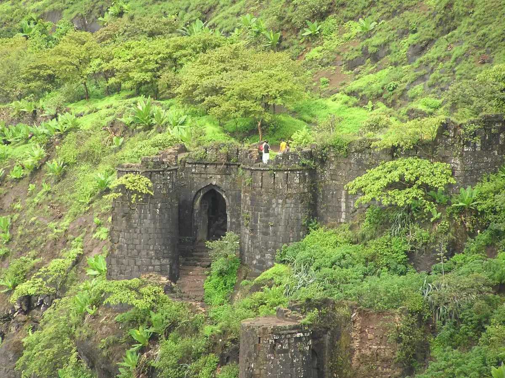
Sinhagad Fort
Literal meaning of Sinhagad Fort is the Lion Fort and according to history this structure is more than 2000 years old. Previously the Sinhagad Fort was named Kondana. Located in the Sahyadri Mountains, this fort is another example of being a historical marvel. One of the most famous historical places in Pune this fort is located at a height of 750 metres. Today only the remains of this fort are still present and that itself attracts the majority of the crowd. You will find two gates here located in north east and south east directions. There is a temple of Goddess Kali, a brewery, tombs of Rajaram Chhatrapati and Tanuji Malusare. Alongside there are some military sheds here as well.
For history buffs this can be a great place for getting some historical insight.
Address: Sinhagad Ghat Road, Thoptewadi, Pune, Maharashtra
Timings: 5 am to 6 pm
Entry Fee: No entry fee
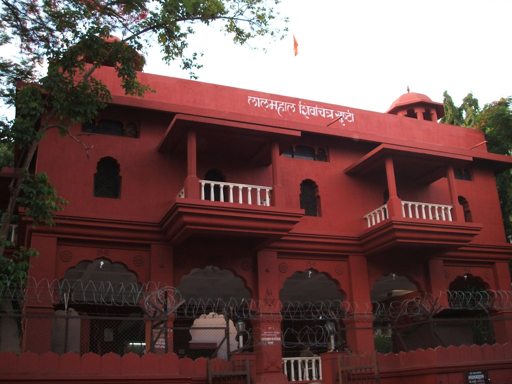
Lal Palace
This is one of the most significant historical places in Pune located near the Shaniwar Wada. As the name suggests the Lal Palace or Red Palace is a red coloured beautiful structure and a landmark that dates back to the 16th century. Shahaji Bhosle, the father of great Shivaji Maharaj had built this structure in the 1630s. Furthermore this palace is also significant as a place where Chhatrapati Shivaji has spent most of his childhood. Lal Mahal is not just any other historical structure, but is also a reflection of Maratha pride. A sculpture of Shivaji ploughing with a golden plough is one of the major attractions here.
Along with that the statue of Jijabai and a replica of the Raigarh Fort are other important attractions here.
Address: Ganesh Road, Durvankur Society, Kasba Peth, Pune, Maharashtra
Timings: 9 am to 1 pm and 4 pm to 8 pm
Entry Fee: Rs. 5
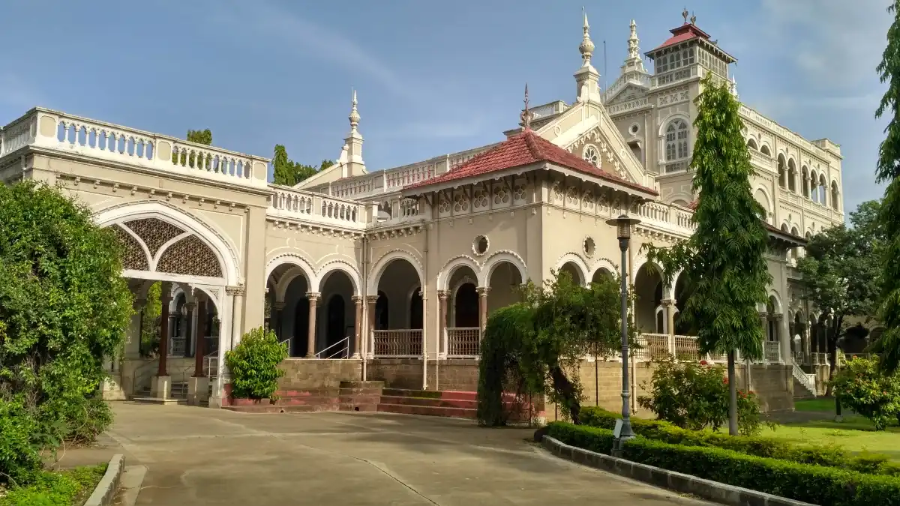
Aga Khan Palace
Muhammad Shah Aga Khan III, the Mughal ruler, had built this palace and it is one of the important historical places in Pune. This is the same place where once freedom fighters like Mahatma Gandhi, his wife Kasturba Gandhi, Sarojini Naidu stayed as prisoners. At present this is a museum where you will find varieties of exhibits. Memorials of Kasturba Gandhi are present here. Alongside ashes of Mahatma Gandhi are also buried here in the ground. At present this place is the headquarter of the Gandhi National Memorial Society. In the year 2003 this monument became a monument of national importance.
Many of the belongings of Gandhiji and many photographs of freedom fighters are displayed here.
Address: Nagar Road, Samrat Ashok Road, Pune, Maharashtra
Timings: 9 am to 5:30 pm
Entry Fee: Rs. 5 for Indians and Rs. 100 for foreigners

Lohagad Fort
Located 52 km away from Pune this location is one of the popular historical places in Pune. This is one of the many hill forts that you can find in Maharashtra. However what makes it special is this fort is one of the UNESCO World Heritage Sites. During 18th century the Lohagad Fort was built and it is located at a height of 3400 feet. Chatrapati Shivaji used this fort during his time to preserve his treasury. There are a total of 4 entrances to this fort. These are Narayan Darwaza, Ganesh Darwaza, Hanuman Darwaza and Maha Darwaza.
Furthermore this fort offers beautiful scenic views and it can ideally be a favourite destination for nature lovers.
Address: Lohagad Trek Road, Pune, Maharashtra
Timings: 9 am to 6 pm
Entry Fee: No entry fee
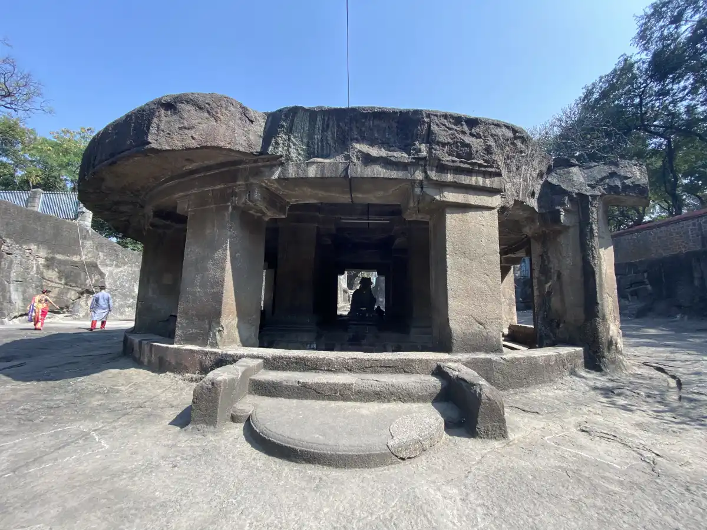
Pataleshwar Cave Temple
While discussing the famous historical places in Pune we really cannot miss out on this one.
This is an ancient temple in Pune and is totally one of a kind. The construction of this temple goes back to the 8th century
and is one of the renowned and popular temples in Pune. As the name suggests this is a cave temple.
Here you will be able to witness interesting glimpses of rock cut structures. Furthermore it is also one of the
protected monuments in Pune as well. Lord Shiva, Lord Ram, Devi Sita, Laxmana, Lord Ganesha reside in this temple.
Address: Jangali Maharaj Road
Timings: 8 am to 5:30 pm
Entry Fee: No entry fee

Adlabs Imagica
This unique theme park has so much, that it will take days to explore all its attractions! Try amazing indoor & outdoor rides like Happy Wheels, Salimgarh, and Nitro. The water park here takes its inspiration from the beautiful Greek city Mykonos.
Try rides like Lazy River, Splash, and Loopy-Woopy. Climb snowy slopes and have a snowball fight right here in Lonavala at the Snow Park as you experience temperatures as low as -5°C.
Location: Imagica is located at 30/31, Khopoli-Pali Road, SH 92, Of Mumbai-Pune Express Way, Sangdewadi, Taluka Khalapur, District Raigad, Khopoli, Maharashtra 410203
Timings: Opens from 10:00 AM – 10:00 PM

Appu Ghar
The very name gets a smile going on any Punekars face as Appu Ghar is a dear reminiscence of an awesome childhood! Also known as Indira Gandhi Udyan, this lovely park is located at the foot of the Shir Durga Devi Tekadi and is one of the most stellar amusement parks in Pune!
The park has been operating for over 20 years and has maintained an eco-friendly ambience throughout. The park is perfect for all age groups and has seen a crowded atmosphere on weekends, due to its popularity!
Spend a few hours in this beloved park from 12:00 PM to 08:00 PM on weekdays and from 12:00 PM to 09:30 PM on the weekends and get a chance to see your loved ones relive their childhood days with mirth and excitement! The Disneyland for Punekars, Appu Ghar is known for its roller coaster rides and spinners. The park is also a popular location for birthday parties for kids.
Timings: 10 am - 5 pm
Location: No.23 Pradhikaran Sector Indira Gandhi Udyan Nigdi, Pimpri-Chinchwad, Maharashtra 411044.

Diamond Waterpark
That is the impeccable style in which this sprawling water park has been built for the child in you to go crazy! Located in Lohagaon by Water Park Road, opposite the Holiday Inn, this park is one of India’s largest water parks and has achieved stellar international standards in terms of the quality of the rides and the services at the place.
This scenic and thrilling water park in Pune offers several features for its customers of all ages such as the different play stations, Lilly pads, wave pool, kiddie’s pool for children and special family pool with wet bubble for the little ones. Head on for a fun and thrilling time spent worth every penny in this new and exciting theme park in Pune!
Timings: 10 am - 5:30 pm
Location: Water Park Road, Lohegaon, Pune, Maharashtra 411047.

Panshet Water Park
Wrapped snugly in the arms of the Sahyadri ranges, the amusement parks in Pune has lured in several visitors over the past few years. This scenic park is located between Varasgaon Dam and Panshet Dam. If you are a water sports lover, then this is the perfect place for you and your friends. Experience the amazing thrill of riding a water scooter and a zooming speedboat and so much more!
There are several options to pick from while here and some of them include thrills like kayaking, swimming, water scooters, speed boating and surfing all of which you can enjoy to your heart’s content. The park has developed itself to become one of Pune’s most popular picnic spot and makes for an ideal one day trip near Pune.
Timings: 10am - 6pm
Location: Near khadakwasla Dam, Pune, Maharashtra – 411024

Sentosa Water Park
Located along the Mumbai-Pune expressway, this is one of the interesting amusement parks in Pune has let out the crazy, delightful side of Punekars who want to spend a day reliving their childhood joy! The Sentosa water park in Pune has a landing pool, kiddie’s pool, swimming and wave pool among other amenities and facilities for you to enjoy!
A part of the Sentosa Resorts franchise, this water park is the perfect choice for those who wish to spend a relaxing day by the pool, with a delicious drink in their hand, and when you feel like it, go sliding through the winding tunnels to land a big dive into the waters!
Shake a leg at the rain dance while the DJ plays your favorite tunes and dine in good restaurants by the water park. The park is open from 10:00 AM to 06:00 PM, so get going soon to spend a tranquil day out with your loved ones!
Timings: 10 am - 5:30 pm
Location: Mumbai-Pune Expressway, 1 Km Before Ravet, Ravet, Pune, Maharashtra 412101

Wet n Joy Water Park
One of the coolest amusement parks in Pune, Wet N’ Joy promises a delightful time with its exhilarating rides, slides, pool and delicious food! Some of the best water adventures, ideal for families are the Thunder Waves, which is 60,000 square feet wide, (yes, it’s enormous!) Then there’s the Royal Castle, the Crazy River and every visitor’s favourite, the Rain Dance.
If you’re keen on some adrenaline rush, you must check out the crazy and curvy, topsy and turvy waterslides like the Nightmare, Cyclone, Whizzard, Tornado and the Master Blaster, among many other heart-thumping rides. These are great fun, especially if you’re visiting with friends. What makes for a memorable trip is also the delectable food served here which include local Maharashtrian, Chinese, Italian and other Continental flavours, worth tucking into!
Timings: 10:00 AM- 06:00PM
Location: Old Pune Mumbai Highway-NH-4, At-Mundhaware, Post-Takve Pune